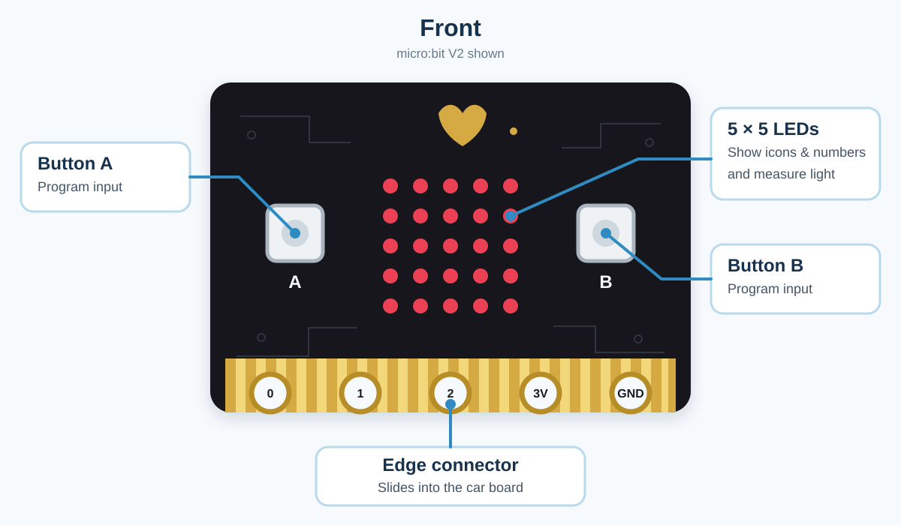
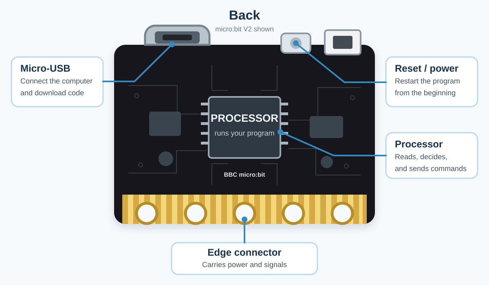

Basic Knowledge
Tip
If you already know these basics, or you want to get the car moving first and learn the details later, you can skip this chapter and go directly to Programming Examples.
Welcome, Young Engineer!
This chapter explains the basic knowledge used in this tutorial, including how the car gets power, reads sensors, moves, and follows a program.
Think of the smart car as a small robot driver:
The micro:bit is the driver. It reads the controls and sensor values, makes choices, and sends commands to the other parts.
The light sensor is a brightness meter. It tells the driver whether the surroundings are bright enough to move toward the light.
The two line sensors are downward-looking track eyes. They tell the driver whether the left and right sides are over black or white.
The ultrasonic sensor is a forward-looking measuring tape. It measures how far away an obstacle is so the car can avoid or follow it.
The infrared receiver is the remote-control messenger. It tells the driver which remote button was pressed.
The motors are the driving legs. They move the car forward or backward, turn it, spin it, and stop it.
The servo is a movable joint. It turns the attached part to a chosen angle, such as
0,90, or180degrees.The LED display, searchlights, RGB lights, and buzzer are the car’s display board and voice. They show icons, numbers, and colors or play notes and melodies.
The program is the driver’s task list. Events, loops, and conditions tell it when to read, decide, move, light up, or make a sound.
The battery is the car’s energy tank. It supplies the power needed by the micro:bit, sensors, motors, servo, lights, and buzzer.
Tip
Build and test one small idea at a time. Making mistakes is a normal part of learning to program.
1. Meet the micro:bit
The micro:bit is a small computer. It can read information, make decisions, and send commands to the car.
Start with the parts that appear in this tutorial:
{kind=link}

Front: Buttons A and B are inputs. The 5 x 5 LEDs show icons and numbers, and the display also measures the light level. The gold edge connector slides into the car board.
{kind=link}

Back: The Micro-USB socket receives a program from the computer. The processor runs that program, and the reset button starts it again from the beginning. The edge connector carries power and signals between the micro:bit and the car.
Note
The pictures show a micro:bit V2. A V1 board looks slightly different, but it has the same buttons, LED display, Micro-USB socket, reset button, and edge connector used in this tutorial.
2. From micro:bit Pins to Car Ports
The gold strips along the bottom of the micro:bit are called pins. When you slide the micro:bit into the car board, its edge connector touches the matching connector inside the slot. These contacts form the path that carries power and signals between the micro:bit and the car.
You do not need to memorize every pin. Start with the labels that appear in this tutorial:
Label |
What it means here |
|---|---|
P0, P1, P2 |
General micro:bit signal pins available for connecting extra parts |
P8 |
The micro:bit pin used by the car’s infrared receiver |
3V3 (3.3 V) |
The micro:bit’s 3.3-volt power connection |
GND |
The common electrical return connection |
S1, S2, S3 |
Servo ports on the car board, used to carry power and a control signal to a servo |
I2C |
A port on the car board for compatible electronic parts that communicate using the SDA and SCL signal lines |
The micro:bit pins and the car-board ports are related, but they are not the same thing. The car board routes micro:bit signals to its motors, lights, sensors, and labelled ports.
Important
Insert the micro:bit in the direction shown in the assembly instructions. Always match the plug, port, direction, and voltage shown in the tutorial. 3V3 and 5V are not interchangeable.
3. Powering the Car Safely
The battery gives the car energy. Before switching it on, remember three simple rules:
Put the batteries into the holder in the direction shown by the
+and-marks.Push each power plug fully into the correct socket.
Use only the battery supply described in this tutorial.
This car needs 3.5 V to 5 V DC. You can use three AAA dry-cell batteries or the supported 3.6 V to 3.7 V lithium-battery supply described in this tutorial. A higher-voltage battery will not simply make the car faster; it can damage the electronics.
Important
The kit includes a three-AAA battery box and an infrared remote control, but the batteries and micro:bit board are not included. They need to be prepared separately.
A USB cable can power the micro:bit while you download code, but it does not provide enough power for the whole car and its motors. Use the car’s battery supply when you test driving and other peripherals.
Warning
Ask an adult for help if a battery becomes hot, leaks, swells, smells strange, or looks damaged.
Never join the positive and negative battery ends directly with metal. This is called a short circuit and it can make the battery and wire very hot.
Switch off the car before plugging in or unplugging parts.
Quick check: If nothing turns on, first check the power switch, the battery direction, and whether every power plug is firmly connected.
4. LEDs, RGB Colors, and the Buzzer
An LED is a small light that uses electricity efficiently. An RGB LED contains red, green, and blue light sources. A program can control their brightness to produce different colors.
The car has two different groups of colorful lights:
Two RGB spotlights at the front work like colorful searchlights.
Four WS2812 RGB LEDs on the bottom can be controlled one at a time. This is how the program creates running-light and breathing-light patterns.
The passive buzzer on the car board changes electrical signals into sound. Higher-frequency signals make higher notes, and lower-frequency signals make lower notes. The car board also has an audio switch. If your program is playing notes but the buzzer is silent, check the position of this switch.
5. Motors: How the Car Moves
The car has two N20 geared motors: one drives the left wheel and one drives the right wheel. The program controls each motor’s direction and speed.
Car action |
Left motor |
Right motor |
|---|---|---|
Move forward |
Forward |
Forward |
Move backward |
Backward |
Backward |
Turn left |
Slower or backward |
Faster or forward |
Turn right |
Faster or forward |
Slower or backward |
Stop |
Stop |
Stop |
Motor speed is controlled using PWM. PWM switches power on and off very quickly. More “on time” gives the motor more average power, so it usually spins faster. It happens too quickly for your eyes to see.
The car may move more slowly when it is carrying a load. Two motors may not spin at exactly the same speed, even when their code values match. The battery level, floor, wheel fit, and small differences between motors can change how the car moves. Adjust the left or right speed a little if the car does not travel straight.
Warning
If a wheel is stuck, stop the motor before touching it. Do not hold a powered wheel still with your fingers.
6. Servo: A Motor That Points
A normal wheel motor keeps spinning. A servo is different: it moves its shaft to a requested angle and tries to hold that position.
The car board has three servo ports, named S1, S2, and S3. The kit includes one SG90 servo. The servo used with the forklift can raise, lower, or position a moving part. Its safe movement range depends on how it is installed. Do not force it past a physical stop. If it buzzes, shakes, or cannot reach the requested angle, switch off the power and check the assembly and angle settings.
7. Sensors: How the Car Notices the World
A sensor changes something in the real world into a value the program can read.
Micro:bit light sensing
The micro:bit can estimate the light level using its LED display. A program can compare that value with a chosen number and make the car react to brighter or darker light.
Sensor readings are not magic “yes” or “no” answers. They are measurements. Your program chooses a threshold, which is the dividing value between two actions.
Infrared remote control
The car board has an infrared receiver, and the kit includes a handheld infrared remote control. Batteries are not included. When you press a button, the remote flashes a coded pattern of infrared light. People cannot see this light, but the receiver can read it. The program connects each button signal to an action such as moving, turning, or stopping.
Point the remote toward the receiver on the front of the car. A wall, a long distance, or very strong sunlight may make the signal harder to receive.
Infrared line sensors
The two line sensors under the car shine infrared light toward the floor and measure the reflected light. Light and dark surfaces reflect different amounts, so the program can tell when a sensor is over a dark line.
For best results:
Use a clear dark line on a light, plain surface.
Keep strong sunlight away from the sensors when possible.
Test whether the sensors detect the line correctly before trying to drive quickly.
If detection is unstable, carefully adjust the blue potentiometer on the car board to change the sensors’ sensitivity.
Ultrasonic sensor
The ultrasonic sensor measures distance using sound that is too high for people to hear. It sends a short sound pulse and listens for the echo. A quick echo means an object is nearby; a later echo means it is farther away.
It works a little like calling “hello” in a cave and listening for the echo. Soft cloth, angled surfaces, very small objects, and moving objects can make the reading less steady.
Important
The kit can be built in different forms. The forklift assembly and the ultrasonic module use the same front area, so they cannot be installed there at the same time. Remove the forklift assembly before changing to the ultrasonic form. The shovel also blocks access to the ultrasonic and I2C area.
8. Input, Decision, and Output
Now that you know the car’s sensors and moving, lighting, and sound parts, you can connect them with a program. Most robot programs can be understood as three steps:
Step |
What happens |
Car example |
|---|---|---|
Input |
The robot receives information |
The micro:bit measures the light level |
Decision |
The program checks a rule |
Is the light level at or above the chosen limit? |
Output |
The robot does something |
The motors move the car or stop it |
The information follows this path:
light sensor -> program checks the light level -> motors move or stop
In block code, an if block lets the robot make a choice:
IF light level is at or above the chosen limit
move forward
ELSE
stop
The robot is not frightened by the obstacle. It is simply following the rule you wrote.
9. Loops, Variables, and Conditions
One decision only happens once. A robot usually needs to keep checking, so programs also use loops, variables, and conditions:
- Loop
A loop repeats instructions.
foreveris a loop that keeps going until the micro:bit is switched off or reset.- Variable
A variable is a named box that remembers a value. A variable called
distancecan remember the latest reading from the ultrasonic sensor.- Condition
A condition is a question with only two answers: true or false. For example,
distance < limitis true when the measured distance is below the chosen limit.
FOREVER
set distance to the sensor reading
IF distance is below the chosen limit
stop
ELSE
move forward
This loop helps the car react when the world around it changes.
10. A Safe Way to Test Every Project
Use this short routine whenever you try new code:
Check the build. Are the wheels free to turn? Are the plugs in the correct ports?
Lift the driving wheels. For the first motor test, keep them off the table so the car cannot race away.
Start small. Test one light, motor, or sensor before combining many parts.
Use a slow speed. Increase it only after the direction is correct.
Watch and listen. Stop if a part becomes hot, smells strange, jams, or makes an unusual sound.
Change one thing. Run the test again so you know what caused the new result.
11. When It Does Not Work: Be a Code Detective
Do not change everything at once. Ask these questions in order:
Power: Is the switch on? Do the batteries have enough power, and are they facing the right way?
Program: Did the
.hexfile finish copying to the micro:bit?Connection: Is each plug fully inserted into the correct port?
Start block: Is the important code inside
on start,forever, or the correct event?Value: Is a speed set to zero? Is a distance or angle value sensible?
Direction: Is a motor or sensor connected in the expected direction?
One-part test: Does the part work in a tiny program by itself?
Use the micro:bit display as a detective tool. Show a number, icon, or letter at important points in your program. If the symbol appears, you know the program reached that point.
12. Tiny Dictionary
- Algorithm
A clear set of steps used to complete a task.
- Bug
A mistake in a program or setup that causes an unexpected result.
- Code
Instructions written for a computer.
- Debug
To find and fix the cause of a problem.
- Hardware
Physical parts you can touch, such as the micro:bit, motor, and sensor.
- Program
A complete set of code that a computer can run.
- Reset
To make the micro:bit stop the current run and start its program again.
- Sensor
A part that measures something and sends a value to the program.
- Software
Programs and digital tools, such as MakeCode.
- Threshold
A chosen dividing value used to decide between two actions.
You are now ready to try the Programming Examples. Start with motor control or lights, then move on to sensor projects when those first tests work.